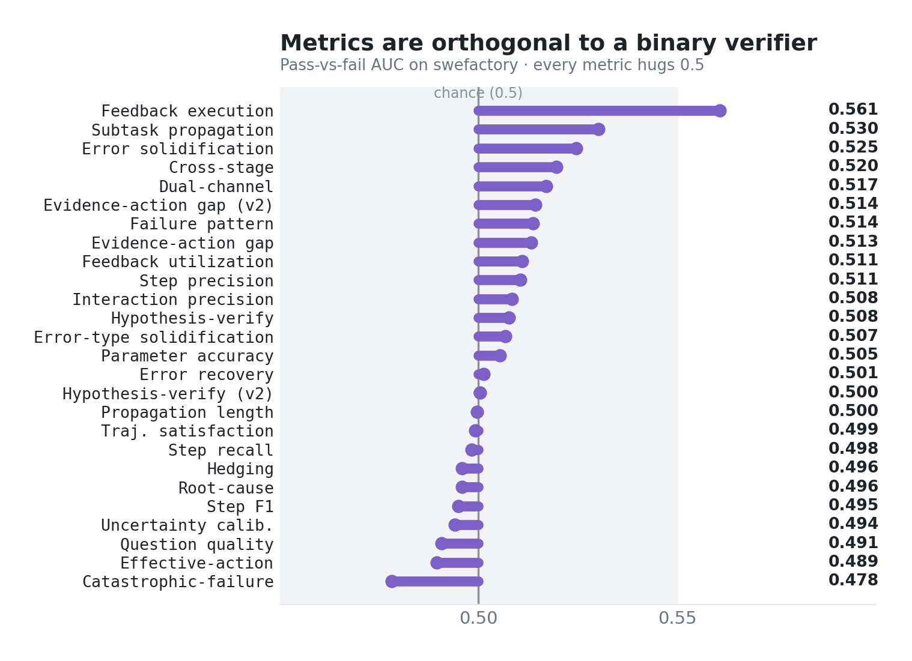
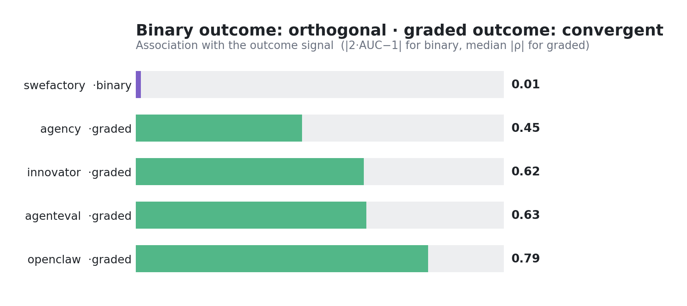
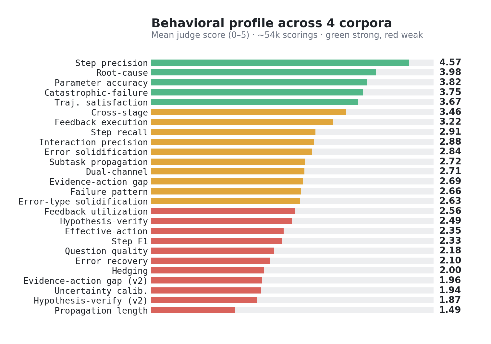
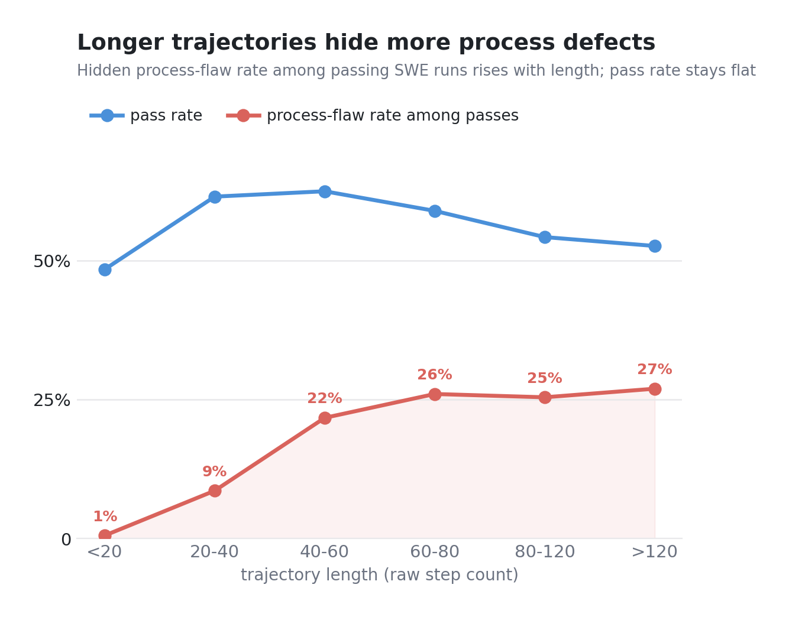
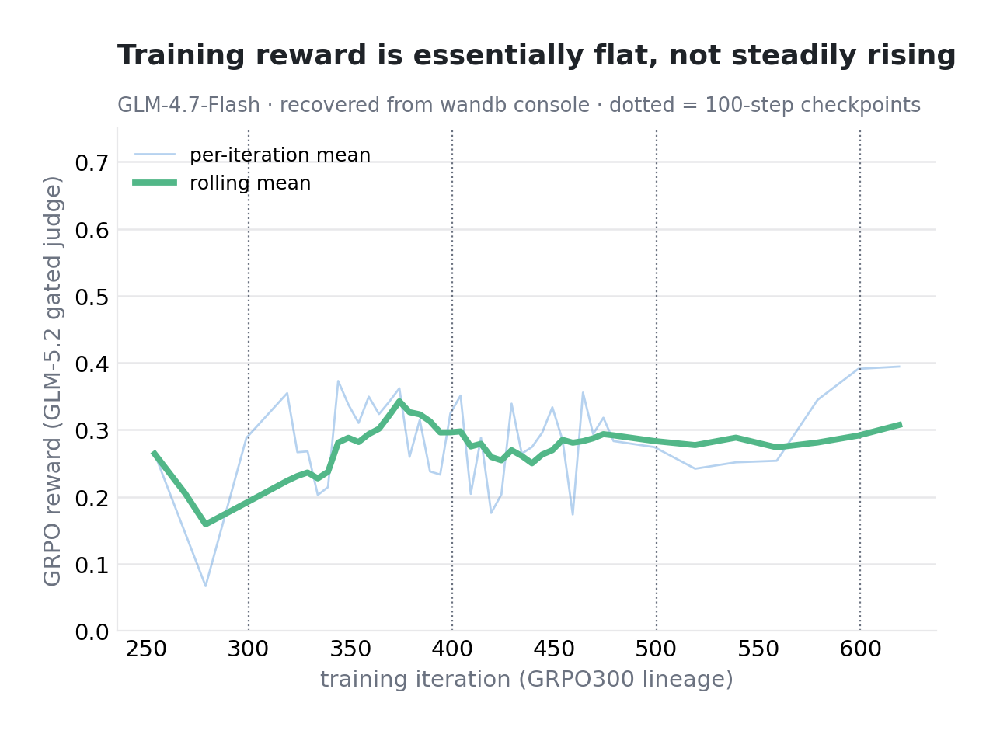

KEY_NUMBERS §G 新增已核实结果（EXP-C 长度轴 / EXP-E 条件正交性 / 行为画像 / GRPO 奖励曲线）+ 论文尚缺实验清单 · 2026-07-15 · ← Home · 跨-Bench 通用性 · OOD 真检验
coverage_audit.py 报 "GAPS: 无"）。核心新发现是过程指标与结果的关系是条件性的——对二值 SWE 验证器（swefactory），judge 过程指标与成败正交（逐指标 AUC 中位数 0.506）；对 0–100 分级 rubric 结果，同一批指标强收敛（|ρ| 中位数最高 0.794）。行为画像显示模型"局部执行强、跨步恢复/验证弱"；长轨迹的过程缺陷率随长度单调爬升到 26.9%；GRPO 训练奖励曲线整体平坦（无稳定增益）。
全部 11 个语料在 31 个规则指标 + 30 个 GLM-5.2 judge 指标上均已跑完。相对此前部署版的两处更新：
coverage_audit.py 汇报 "GAPS: 无"——所有语料-指标组合无缺口。
这条修正了此前"过程指标与结果总是正交"的表述——正交与否取决于结果标签的形态：
judge 过程指标对 pass/fail 逐指标 AUC 全部落在 0.49–0.55（中位数 0.506，≈随机线）。最高的两个也只是勉强脱离 0.5：
| Judge 指标 | pass/fail AUC | |
|---|---|---|
| feedback-execution 反馈执行 | 0.556 | |
| subtask-propagation 子任务传播 | 0.533 | |
| 全 26 指标中位数 | 0.506 | |
| 全 26 指标范围 | 0.49–0.55 | ≈ 0.5 随机线 |
同一批 judge 指标对分级结果分数的每语料 |ρ| 中位数：
| 语料 | |ρ| 中位数 | |ρ|>0.3 指标数 | |
|---|---|---|---|
| openclaw_v3（230 条，带 0–100 分） | 0.794 | 21/23 | |
| agenteval | 0.626 | 22/25 | |
| innovator | 0.620 | — | |
| agency | 0.451 | 16/23 |
单指标极值：trajectory-satisfaction 对分级结果 ρ=0.922（agenteval）/ 0.933（openclaw）。


约 54k 次有效 judge 打分（4 语料，0–5 分制）的逐指标均值，两端分层清晰：
| Judge 指标 | 均值 (0–5) | |
|---|---|---|
| step-precision 步骤精确率 | 4.62 | |
| parameter-accuracy 参数准确率 | 4.02 | |
| root-cause 根因归因 | 4.01 | |
| trajectory-satisfaction 轨迹满意度 | 3.94 | |
| evidence-action-gap 证据行动鸿沟 | 2.84 | |
| hypothesis-verify 假设验证 | 2.71 | |
| error-recovery 错误恢复 | 2.29 | |
| propagation-length 传播长度 | 1.64 |

swefactory 全量 95,828 条。过程缺陷取严格红旗定义：盲重试 / 死锁轮询爆发 / eval 滥用 / 未读先改。在通过（pass）的轨迹中统计带红旗比例（FPR-among-passes，即"答案对但过程有病"率）：
| 轨迹长度（步数） | 红旗率（passes 内） | |
|---|---|---|
| <20 | 0.5% | |
| 20–40 | 8.6% | |
| 40–60 | 21.7% | |
| 60–80 | 26.0% | |
| 80–120 | 25.4% | |
| >120 | 26.9% |

GRPO300 一脉 iter 1→619（基座 GLM-4.7-Flash，MoE 30B-A3B：47 层 / 64 专家 top-4 / MLA），GLM-5.2 gated judge 奖励。从 wandb output_raw console 抢救回来的曲线（原始 log 已被覆写）：
| iter 窗口 | judge 奖励均值 | |
|---|---|---|
| 300–400 | 0.301 | |
| 400–500 | 0.270 | |
| 500–600 | 0.287 | |
| 600–619 | 0.394 （n=607，大概率噪声） |

来自 NEXT_EXPERIMENTS / PAPER_DIRECTION_v3 的缺口审计。状态：被决策阻塞 未跑·需搭建 纯重分析·易做 降级·后置
| # | 实验 | 内容 | 状态 |
|---|---|---|---|
| 1 | EXP-B 元评估测试床（皇冠明珠，补 GAP1+GAP2） | 跨 bench 构建"答案对但过程有病"集（≥4 来源）：注入/已知缺陷阳性池（改测试、硬编码输出、盲重试、跳过验证）+ gold-seed 干净池 + 失败但有价值池。标注三级：(c) 弱签名 → (b) 跨家族模型陪审团（Claude+GPT+Qwen，避开 judge 家族）→ (a) 小规模人工 gold 切片。汇报逐构念检测 AUC、solution 级 F1、步级 first-flawed-step 定位 AUC。这是把 Section 4 从"可靠性研究"升级成"真元评估"的关键——ReasonEval 的步级 AUC 92.8 目前在我们这边没有对应物。 | 被 a/b/c 标注决策阻塞 |
| 2 | EXP-A 数据筛选 SFT 消融（ReasonEval Table-5 对应物） | 条件：全集 | 过程干净过滤（gold-seed 30,012 = 通过集的 54.4%）| 同规模随机 ×3 种子 | 含高进展失败。固定基座各自 SFT → held-out GDPval/skillbench 评测；汇报准确率、平均轨迹 token、过程分。"最先跑/最干净"。 | 未跑·需基座+SFT harness |
| 3 | GRPO checkpoint 的 held-out 评测 | 对 iter 序列在 held-out bench（GDPval/skillbench/terminal；SWE 类验证器评测也缺——现有 SWE 数字只是 OOD swefactory rollout 语料，不是对我们 checkpoint 的评测）跑评测。没有它 §5 的 F6 不可解释（平坦奖励分不清"没涨"和"hack judge"）。 | 未跑 |
| 4 | 规模化人工过程错误标注（STEP-3 唯一真缺口） | 现有 ground truth 仅 ~50 条人工标注、只覆盖 ~3–5 个指标、只有轨迹级；无步级定位标签。需覆盖整个指标套件；同时人工校验 EXP-C 的 FPR（GAP3）。 | 未跑 |
| 5 | EXP-D 留一 bench 评估器迁移 | 在 bench A..I 上校准 flawed-vs-clean 阈值，在留出的 bench J 上测检测，轮换；汇报哪些构念存活。 | 纯重分析·未跑 |
| 6 | EXP-F 指标当奖励 + 零假设基线 | outcome-only | outcome+随机匹配 | outcome+过程过滤 三条件。已明确降级为 future-work 支撑；仅在 GRPO 线稳定时跑。 | 降级·后置 |
| 7 | EXP-C 余项 | (a) 错误固化逐十分位曲线（扩展早期 4.2% → 晚期 18.7%）；(b) 前缀可检测性 AUC-vs-前缀比例曲线成图（数据已在步级两段式分析里有；NEXT_EXPERIMENTS 原定的 F5 前缀可检测性图未产出——现已交付的 F5 是"正交 vs 收敛"）。 | 数据已有·出图即可 |
| 8 | F1 构念层级图 + 构念树写作（STEP-1 缺口） | 7 → 27 → 168 树状图，以及正式形式化的 6→27→96 构念树 write-up。未产出（newexp_figs 从 F2 起）。 | 未产出 |
| 9 | EXP-E 混淆清理 | 分级 rubric 语料可能与 judge 指标共享 LLM-judge 方法方差；干净检查（规则指标 + 仅人工 rubric 切片）在 §G 备注为干净但未作为专门分析跑过。 | 未作专门分析 |
fine_grained_eval/new_start_61/m_v2/exp_c_and_figures.py 产出；judge 原始打分在 rubrics/judge_*_glm_results.jsonl。覆盖审计：coverage_audit.py。GRPO 曲线从 wandb output_raw console 恢复（原始 log 已覆写）。相关页：跨-Bench 通用性 · OOD 真检验 · Home。